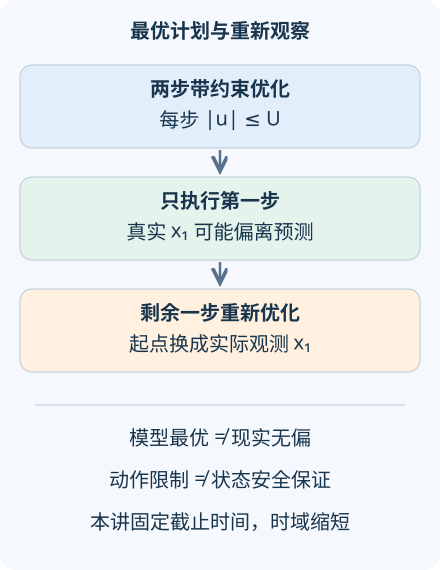

AI 研究 06 · 模型预测规划：最优计划为何还要重新计算
问题：模型已经算出“最优动作”，为什么执行第一步后还要再观察、再优化？先修：潜在世界模型、导数与凸二次函数。资料核查截至 2026-09-08；实验真正求解两次带动作约束的优化，不把简单更新规则冒充规划。
1. 优化的是模型中的未来
模型预测控制通常从当前状态出发，预测若干步的后果，在约束下选择动作序列，只执行开头一段，然后重新观察并求解。反馈让计划使用新的实际状态；最优化保证则首先属于使用的模型。只要模型有偏差，预计可行与真实可行就可能分开。
本讲固定两步截止时间，状态和动作无量纲，真实系统为 \(x_{t+1}=x_t+u_t\)，初态 \(x_0=0\)。控制器相信 \(\hat x_{t+1}=\hat x_t+\hat b u_t\)，其中 \(\hat b>0\) 是它对动作效果的估计。目标位置为 \(r>0\)，动作限制为 \(|u_t|\le U\)。
计划最小化
第一项奖励到达目标，第二项惩罚用力。增大第二项会允许留下位置误差，以节约动作；所以最优终点未必等于目标，哪怕模型完全正确。理解代价定义，比把曲线末端“差一点”都判成算法失败更重要。

2. 把受约束最优解从头推出来
目标的 Hessian 为 \(2\hat b^2\mathbf1\mathbf1^T+2\lambda I\)。由于 \(\lambda>0\)，对任何非零向量 \(v\)，二次型都严格为正，目标严格凸，因此盒约束上的最优解唯一。
问题对交换 \(u_0,u_1\) 不变；唯一最优解必须满足 \(u_0=u_1=u\)。也可固定动作和，用 \(u_0^2+u_1^2\ge(u_0+u_1)^2/2\) 说明平均分配最省动作。于是只需求解
对 \(u\) 求导并令其为零，得到 \(u^*=\hat b r/(2\hat b^2+\lambda)\)。若超出允许区间，凸函数在相应边界取最小值，所以
这里裁剪是该特定对称凸问题的解析结论，不能推广为任意非线性规划“先无约束求解再逐项裁剪”都正确。有状态耦合约束时，后者可能直接破坏可行性。
3. 观察之后，剩余问题已经改变
执行第一步后，真实状态是 \(x_1=u_0\)，而非模型原本预计的 \(\hat b u_0\)。截止时间还剩一步，重新优化
之前已付出的动作成本是常数，不影响此时的最优选择。这一重规划真正利用了新观测，但并未自动修正增益 \(\hat b\)；系统辨识与状态反馈是相关而不同的工作。
默认 \(\hat b=1.3,r=1,U=0.6\)，原计划两步各约 \(0.373563\)。模型预计终点为 \(0.971264\)，真实开环终点只有 \(0.747126\)。重新观察后第二步改为 \(0.454954\)，真实终点达到 \(0.828517\)。位置误差在本设置中下降，但不是所有偏差、约束和代价下反馈都必然更接近目标的定理。
4. 动作限制不等于状态保证
把动作控制在允许范围内，是当前实验直接保证的约束。若机器人不能穿过墙面，还必须约束真实状态。用错误模型预测状态，仅检查 \(\hat x_t\) 不撞墙并不足够。例如模型低估动作效果时，真实位移可能比预计更大，满足模型限制的动作仍会越界。
一种鲁棒思路是使用误差集合 \(E_t\)，要求预测状态加上所有允许偏差仍在安全集合 \(X\) 内：\(\hat x_t\oplus E_t\subseteq X\)。\(\oplus\) 表示集合中两元素逐对相加。误差集合要由可信的扰动界和闭环误差传播得到，不能随意画一个“安全余量”。集合太小会漏掉风险，太大会导致无可行动作。
学习近似 MPC 的保证，首稿 2018-06-11把鲁棒设计与统计学习界结合，研究近似控制器的稳定和约束性质。它的意义正在于把保证所需的误差条件写清，而非宣称任意学得控制器都有同样结论。
5. 从解析模型到潜在空间规划
TD-MPC2，首稿 2023-10-25，修订 2024-03-21研究在潜在模型中做局部轨迹优化并跨任务学习。其任务表现与架构扩展证据，不应被转换成所有现实状态约束已获证明。学得的价值函数还能近似时域外的回报，但价值误差也会改变最优选择。
区域性质与鲁棒 NMPC，首稿 2025-06-25，修订 2026-03-25利用特定循环网络的区域增量稳定性，构造管状非线性 MPC，并在相应条件下分析收敛和递归可行性；验证包括 pH 中和过程的数值模拟。研究前沿在于如何让学习模型、观测器和约束证明相互兼容，条件范围本身就是成果的一部分。
真正实施时还要报告求解耗时、失败时的备用动作、状态估计误差和采样周期。一次计算出的全局最优若在截止时间之后才返回，也无法作为当前控制动作。下一讲将把这一点变成可直接测量的时序误差。
可以用独立枚举检验解析答案：在动作方形区域上铺一张密网格，对每对动作直接模拟模型终点并计算代价，确认没有网格候选优于解析解。再缩小网格间距，最优候选应逼近同一位置。这种检查不重复求导过程，能发现分母中的系数或动作约束写错。实际高维系统无法穷举所有序列，于是需要数值优化、采样搜索或策略提供候选；此时求解器返回的是可行解、局部最优还是带界的全局最优，需要如实说明。
先降低动作上限，预测哪些设置会撞到约束边界。再令 \(\hat b=1\)，检查两次规划是否与准确模型的动态一致性相符；保留动作惩罚时，终点仍可能略低于目标。
6. 迁移练习
题一：若 \(\lambda=0\) 且动作未受限，原来的“唯一且对称最优”证明还成立吗？
展开答案
不成立。只要动作和等于 \(r/\hat b\)，都能令终点误差为零；目标沿某些方向不再严格凸。对称分配仍可选，却未必唯一。正的动作惩罚消除了这种退化。
题二：为什么不能把任意规划器输出裁剪到动作上限后，就声称原有状态安全证明仍成立？
展开答案
裁剪改变整条预测轨迹，可能使原本依靠后续动作避障的计划失效。应在优化中纳入约束，或重新验证裁剪后的闭环可行性。本讲裁剪只对已证明的特定凸盒约束问题有效。
速查摘要
| 环节 | 本讲解析式 |
|---|---|
| 两步初始最优 | \(u=\operatorname{clip}(\hat b r/(2\hat b^2+0.1))\) |
| 剩余一步 | \(v=\operatorname{clip}(\hat b(r-x_1)/(\hat b^2+0.1))\) |
| 约束边界 | 动作可行不自动保证真实状态可行 |
来源：近似 MPC 保证、TD-MPC2、2026 区域鲁棒 NMPC。先修：世界模型；下一讲：视觉语言动作模型。